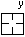
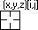

Eine andere Methode, um Datenpunkte selektiv zu beschriften, ist die Verwendung der Bedienelemente im Dialog Details Zeichnung unter Nur bei festgelegten Punkten zeigen.
Informationen zum globalen Beschriften von 2D-Diagrammen (auch Beschriften von einzelnen Datenpunkte) finden Sie unter Diagramme mit Hilfe der Registerkarte Beschriftung oder den Minisymbolleisten beschriften.
Zum genauen Auswählen und Beschriften von spezifischen Punkten in 2D- und Konturdiagrammen können Sie das benutzerdefinierbare Tool Anmerkung verwenden.
Eine andere Methode, um Datenpunkte selektiv zu beschriften, ist die Verwendung der Bedienelemente im Dialog Details Zeichnung unter Nur bei festgelegten Punkten zeigen. |
2D-XY-Datenzeichnungen:
| Anmerkungsform | Cursor |
|---|---|
| (X-Koordinatenwert, Y-Koordinatenwert) | |
| (X-Koordinatenwert, Y-Koordinatenwert) [Indexnummer] | |
| X-Koordinatenwert | |
| Y-Koordinatenwert |  |
| Indexnummer (Zeilennummer) |
Konturdiagramme:
| Anmerkungsform | Cursor |
|---|---|
| (X-Koordinatenwert, Y-Koordinatenwert, Z-Koordinatenwert) | |
| (X-Koordinatenwert, Y-Koordinatenwert, Z-Koordinatenwert) [Zeilenindexnummer] | |
| (X-Koordinatenwert, Y-Koordinatenwert, Z-Koordinatenwert) [Zeilenindexnummer] [Spaltenindexnummer] |  |
| X-Koordinatenwert | |
| Y-Koordinatenwert | |
| Z-Koordinatenwert | |
| Indexnummer (Zeilennummer) | |
| (Indexnummer (Zeilennummer), Indexnummer (Spaltennummer)) |
Wenn Sie einen Datenpunkt in einer Datenzeichnung markiert haben, können Sie auf die Datenzeichnung klicken und auf der Tastatur auf ← und → drücken, um den gewünschten Datenpunkt auszuwählen. |
Um eine vorhandene Beschriftung benutzerdefiniert anzupassen, klicken Sie mit der rechten Maustaste auf die Beschriftung und wählen Sie Einstellungen. Der Dialog Anmerkung wird geöffnet:

Zusätzlich zu Standardanmerkungen können Sie eine einzelne benutzerdefinierte Anmerkungszeichenkette hinzufügen, die beliebigen Text und LabTalk-Variablen enthalten kann. Wenn Sie eine benutzerdefinierte Zeichenkette definieren, wird sie zu einer Ihrer Beschriftungsoptionen über TAB-Taste, identifizierbar durch die Kennzeichnung "Custom" ("Benutzerdefiniert").
Um eine benutzerdefinierte Beschriftung zu erstellen:
In diesem Beispiel verwenden wir im Dialog Achsen das Feld Formel, um eine benutzerdefinierte Hilfsstrichsbeschriftung zu erstellen, und passen dann das Anmerkungshilfsmittel benutzerdefiniert an, um den "Formel"wert anstatt des tatsächlichen Werts der Y-Achse anzuzeigen:
x*pi in das Feld Formel ein und klicken Sie auf OK. Beachten Sie, dass die Hilfsstrichsbeschriftungen der Y-Achse jetzt angepasst sind, um gemäß Ihrer eingegebenen Formel alles richtig anzuzeigen.$(x), $(y,y) ein und klicken Sie auf die Schaltfläche Als Standard festlegen, bevor Sie mit OK den Dialog schließen. Beachten Sie, dass die Beschriftung jetzt den mit der Formel berechneten Wert der Y-Achse richtig anzeigt. Falls Sie die Beschriftung im Beschriftungsformat der großen Hilfsstriche auf der Y-Achse zeigen möchten, können Sie $(x), $(y,yt) eingeben.Neben dem Versehen der Punkte mit Anmerkungen über Zellwerte oder Zeichenketten können Sie auch eingebettete Bilder als Anmerkungsbeschriftungen zeigen.
Beschriftungen, die mit dem Anmerkungstool erstellt wurden, sind Textobjekte, die Substitution verwenden, um einen numerischen Wert, eine Textzeichenkette oder ein eingebettetes Bild anzuzeigen. Damit unterstützen sie benutzerdefinierte Anpassungen über die hier dargestellten hinaus. Weitere Informationen finden Sie unter Notations and syntax used in labeling plotted data und Text Label Substitution, beide in der Anleitung zur LabTalk-Programmierung. |